Play With Your Food
Maruchan Ramen Noodle Soup was a staple of my childhood that has become a nostalgic happy place. I eat it a lot to this day. But even ramen noodles couldn't evade my tinker tendencies.I inadvertently followed my normal development progression (as I do with all my hobbies) by starting with a thing made by someone else, learning how it was built, making tweaks, and eventually creating my own. I started "fancying" my ramen noodles up by adding some chopped green onions and maybe throwing in the occasional leftover grilled chicken pieces. Mushrooms are a favorite and an easy addition, so those were implemented early. Then I played around with my own broth by replacing the sodium-laden flavor packets with chicken or beef stock, then eventually different variations of water and miso and/or Better Than Bouillon bases. I tried all kinds of different noodles, too - dry ramen, frozen udon, soba, chow mein... Plus chili oil, soy sauces, Chinese Five-Spice, cilantro... Turns out there's SO many fabulous variations!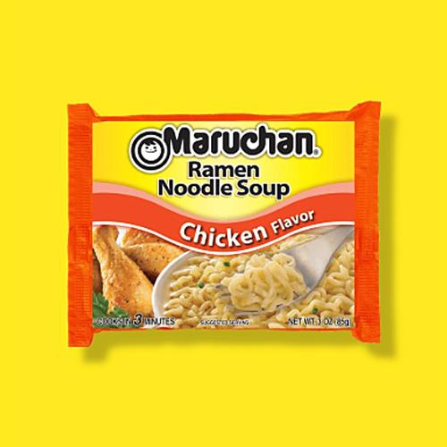
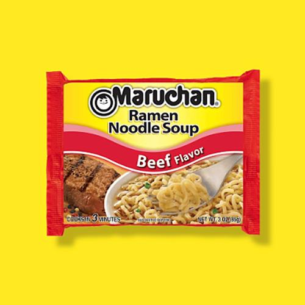
At this point, when I have the time, I make my heaping bowl of delicious noodles from scratch, sometimes sautéing shallots, garlic, and mushrooms, adding my soup base, then cooking the noodles and usually adding some type of protein. I'll tell you right now that nothing beats a steaming bowl of noodles on a cold morning after a long run. Nothing. That said, I still regularly indulge in a basic Maruchan ramen pack when the mood hits. And it never lets me down :)
Disclaimer: There's absolutely nothing special about any of this. Not only is ramen insanely popular, even an annoying fad at times, but also perfected by actual professionals who would laugh at this, I decided to share simply to show that the tinkering method doesn't necessarily have to apply strictly to technical and mechanical things. Ask any chef, line cook, or parent and they'll completely concur that cooking is fundamentally a playground; a place to combine, deconstruct, try out different methods and techniques... to tinker and create.
Also, for every picture below I made 100 other bowls. There's no rhyme or reason why I decided to take the pictures of any of these in particular. Honestly, I just like looking at them sometimes when I'm missing pleasant thoughts.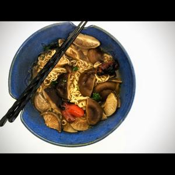
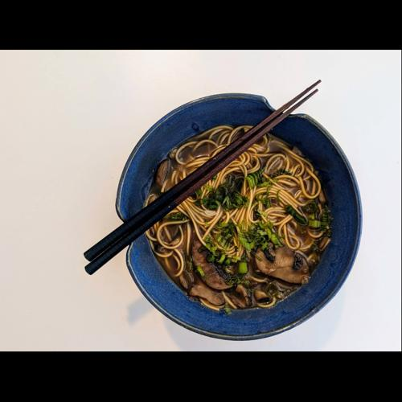
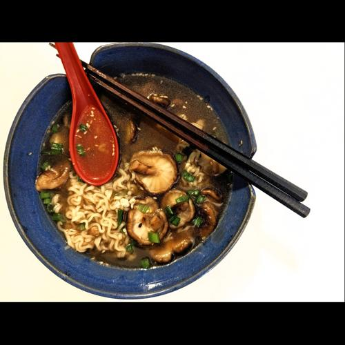
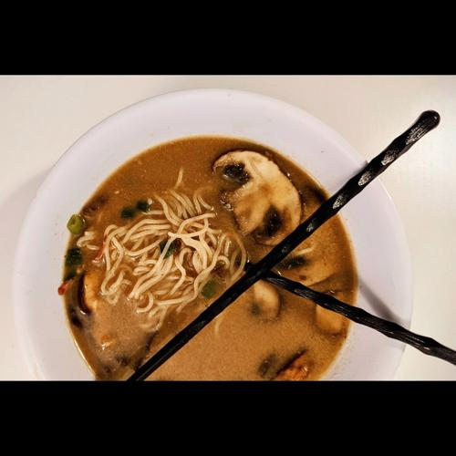
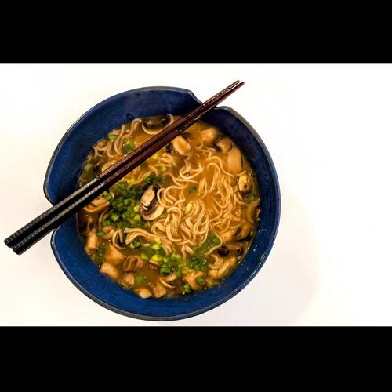
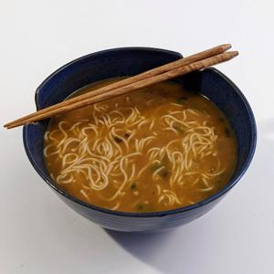
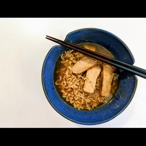
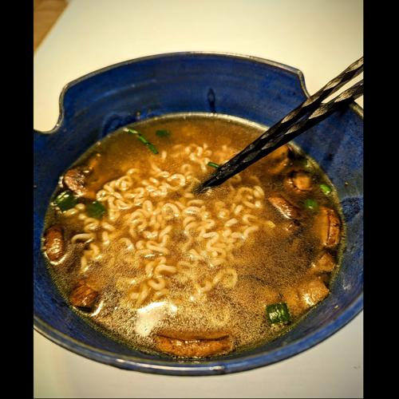
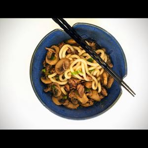
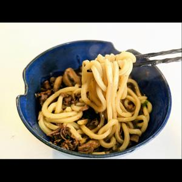
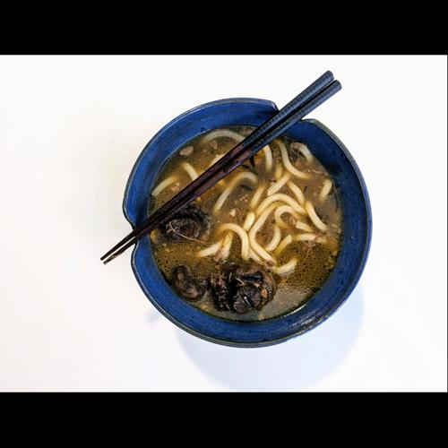
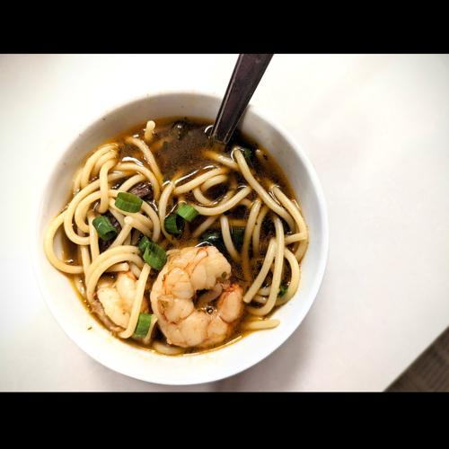
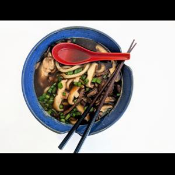
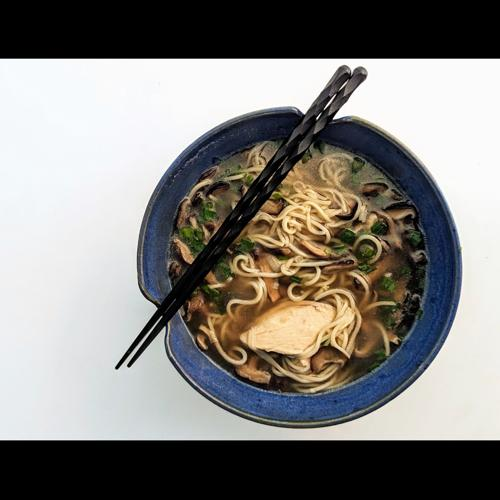
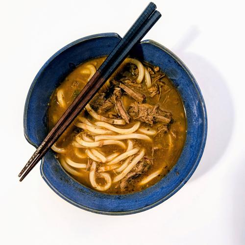
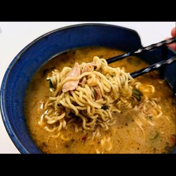
2022-11-16